ЗАДАЧА ЗА РАЗПОРЕЖДАНЕ
Задача за разпореждане може да се създаде към входящ иницииращ документ, съпровождащ документ по дело, документ от обща администрация и към изходящ документ. Задача за разпореждане може да се изпрати на потребител или структура (група потребители) за разпореждане по документ.
След въвеждане на информация за входящ иницииращ документ (6.1.1 Регистриране на входящ иницииращ документ) и входящ съпровождащ документ (6.1.2.Регистриране на съпровождащ документ) и избор на бутон в таб Задачи има възможност за създаване на задача за разпореждане. Задачата за разпореждане се използва за разпореждане по регистриран документ по дело.
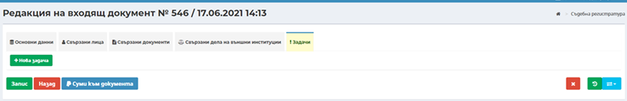
Създаването на нова задача за разпореждане става посредством избор на бутон
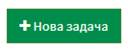
. Отваря се модален прозорец за попълване на следните данни:
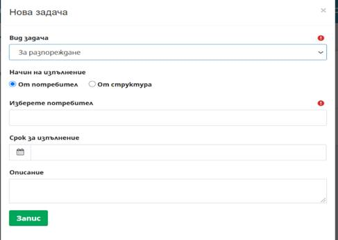
- Вид задача – избира се задача За разпореждане;
- Начин на изпълнение – избира се посредством маркиране на радио бутон за изпълнение на задачата от потребител или от структура. При насочване на задача към потребител тя се визуализира в персонализирания му екран и системата очаква приемане и изпълнение само от конкретния потребител. При избор за изпълнение от структура, задачата се визуализира в персонализираните екрани на всички служители, назначени в съответната структура (организационна единица на съда). Системата очаква приемане от изпълнител, след приемане от първия потребител задачата се премахва от персонализираните екрани на останалите потребителите. Системата очаква изпълнение само от потребителя приел задачата;
- Изберете потребител – при въвеждане на минимум три последователни символа, системата автоматично търси и предлага за избор списък от потребители, към които да бъде насочена задачата;
- Срок за изпълнение – при необходимост се въвежда срок за изпълнение на поставената задача, като този срок се визуализира в календара на изпълнителя на задачата;
- Описание – поясняващо поле, в което могат да бъдат вписани допълнителни данни, по преценка на потребител. Полето няма задължителен характер.
Избира се бутон  , с което задачата е успешно
създадена.
, с което задачата е успешно
създадена.
След запис на задачата към регистрирания документ в таб Задачи се визуализира следната информация:
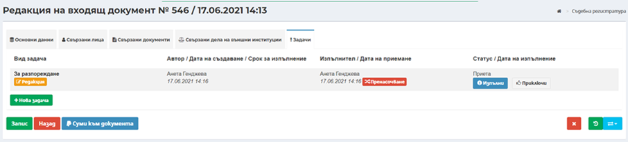
При насочване на задачата за изпълнение от друг потребител, създадената задача може да бъде редактирана от автора ѝ, до момента на приемане на задачата за изпълнение, посредством бутон Редакция. При избор на бутон Редакция се отваря модален прозорец със същите полета каквито при създаване на нова задача.
Забележка: Ако задачата е насочена към и се очаква изпълнение от един и същи потребител, бутон Редакция е активен до пренасочване или изпълнение на задачата.
Потребителят, към когото е насочена задачата, получава нотификация за нова задача в инструмент Задачи в лентата с менюта и инструменти. Задачата се визуализира и в панел Моите задачи в Персонализирания екран на потребителя, а ако в задачата е посочен краен срок за изпълнение, съответно се визуализира и в панел Календар:
През бутон Преглед от панел Моите
задачи на началния екран на системата или бутон Преглед  в
екрана с пълния списък на задачи към потребител, се отваря документа, по който
е необходимо да се извърши действието. В таб Задачи, посредством Бутон Изпълни,
потребителя може да приеме задачата за изпълнение или да пренасочи задачата към
друг служител, посредством бутон Пренасочване.
в
екрана с пълния списък на задачи към потребител, се отваря документа, по който
е необходимо да се извърши действието. В таб Задачи, посредством Бутон Изпълни,
потребителя може да приеме задачата за изпълнение или да пренасочи задачата към
друг служител, посредством бутон Пренасочване.
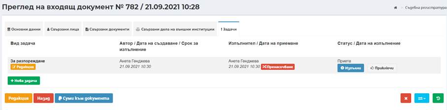
Бутон Пренасочване е достъпен както за автора на задачата, така и за получателя на задачата. Посредством този бутон, задачата може да бъде пренасочена за изпълнение от друг потребител.
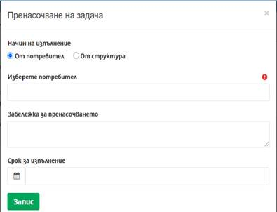
При пренасочване на задачата за изпълнение от друг служител се отваря модален прозорец със следните полета:
- Начин на изпълнение – с аналогичните опции, както при създаване на задачата, избира се посредством маркиране на радио бутон за изпълнение на задачата от потребител или от структура.
- Изберете потребител – при въвеждане на минимум три последователни символа, системата автоматично търси и предлага за избор списък от потребители, към които да бъде насочена задачата;
- Забележка за пренасочването – поясняващо поле, в което могат да бъдат вписани допълнителни данни, при необходимост. Полето няма задължителен характер;
- Срок за изпълнение – при необходимост се въвежда срок за изпълнение на поставената задача, като този срок се визуализира в календара на изпълнителя на задачата.
Пренасочването на задачата, автоматично генерира нов запис за задача със съответните данни:
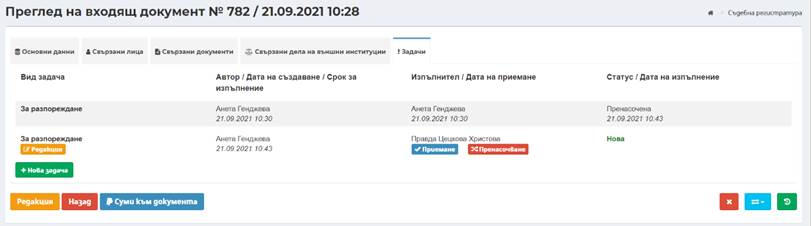
При приемане на задачата статуса се променя, като се активира бутон Изпълни . След потвърждаване на изпълнението се отваря следния прозорец:
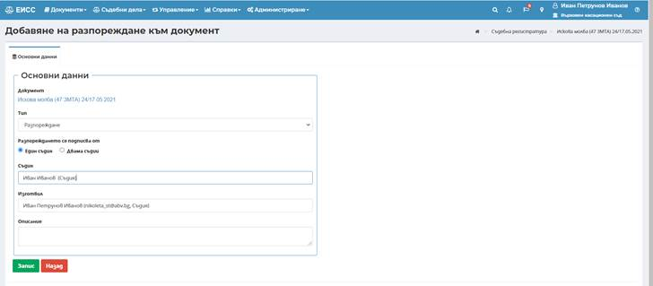
- Поле Тип – избира се съответно Разпореждане, Разпореждане за преразпределение или Разпореждане за насрочване;
- Разпореждането се подписва от – по подразбиране е маркирано подпис от един съдия;
- Поле Съдия – избира се съдия, който ще подписва разпореждането;
- Поле Изготвил – по подразбиране автоматично е заредено името на потребителя, който изготвя разпореждането;
- Поле Описание – при необходимост се въвежда допълнителен текст.
След избор на бутон Запис
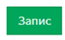
се отваря екран, в който чрез избор на бутон Изготвяне на акт се визуализира вграден текстов редактор за изготвяне на разпореждането. Екранът е разделен на две секции-уводна (заглавна) част и основна част.
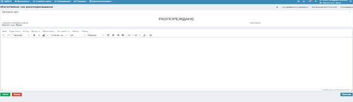
В заглавната част няма възможност за редакция.
В основната част има възможност чрез вградения текстов редактор да се въвежда директно текста на съдебния акт/разпореждане или посредством копиране от външен файл (създаден извън системата) да се прехвърли във вградения текстов редактор.
Изготвената версия на съдебния акт/разпореждане може да бъде прегледана посредством избор на бутон Преглед , след което се генерира файл във pdf формат, който може да бъде записан локално на компютъра на потребителя или да бъде отворен за преглед. След отваряне се визуализира изготвения съдебен акт/разпореждане.
При избор на бутон Запис, се преминава към избор на бутон Задачи и създаването на Нова задача:
Визуализира се следния прозорец:
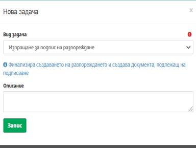
След избор на бутон Запис, задачата е изпратена за подпис и очаква да бъде изпълнена или пренасочена.
Подписването може да стане посредством избор на бърз бутон Подписване на разпореждане .
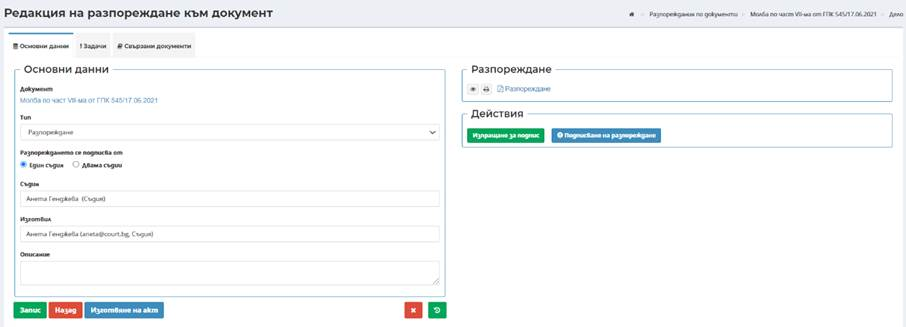
След изготвяне на съдебния акт/протокол при необходимост се преминава към насочване на задача за Изпращане за съгласуване (задачата е опционална – стъпките са описани в точка 7.7 Задача за съгласуване) или директно на задача за Изпращане за подпис (задачата е задължителна – стъпките са описани в точка 7.8 Задача за подпис).
След подписване на документа се генерира номер на документа и автоматично се приключва задачата за подписване:
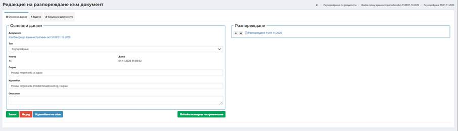
След изготвяне и подписване на Разпореждане към входящ документ при преглед на съответния документ се визуализира бутон Разпореждания, който води до списъчен екран с всички изготвени към съответния документ разпореждания, независимо от статуса в който се намират.
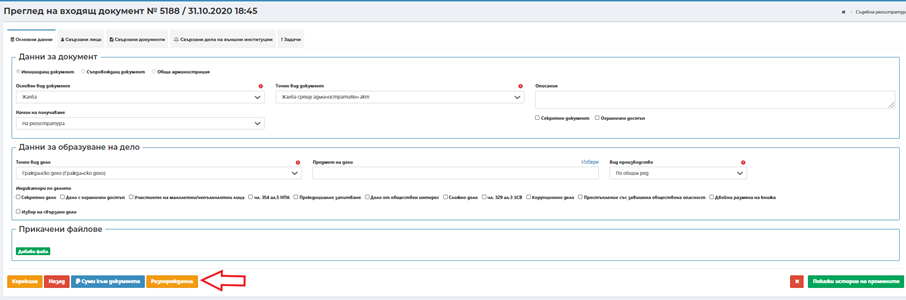
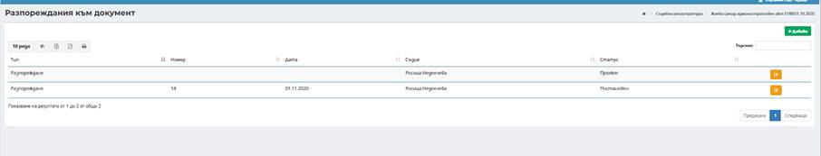
Всички регистрирани подписани Разпореждания към входящи документи се достъпват от под меню Разпореждания по регистрирани документи в меню Документи (6.6 Разпореждания по документи).
Важно! Всички разпореждания към иницииращ документ се достъпват през електронната папка в секция Иницииращи документи. Всички разпореждание по дело и към изходящ документ се достъпват през електронната папка в секция Актове по дело. Разпорежданията по входящ и изходящ документ са видими в в папка Ход на делото.